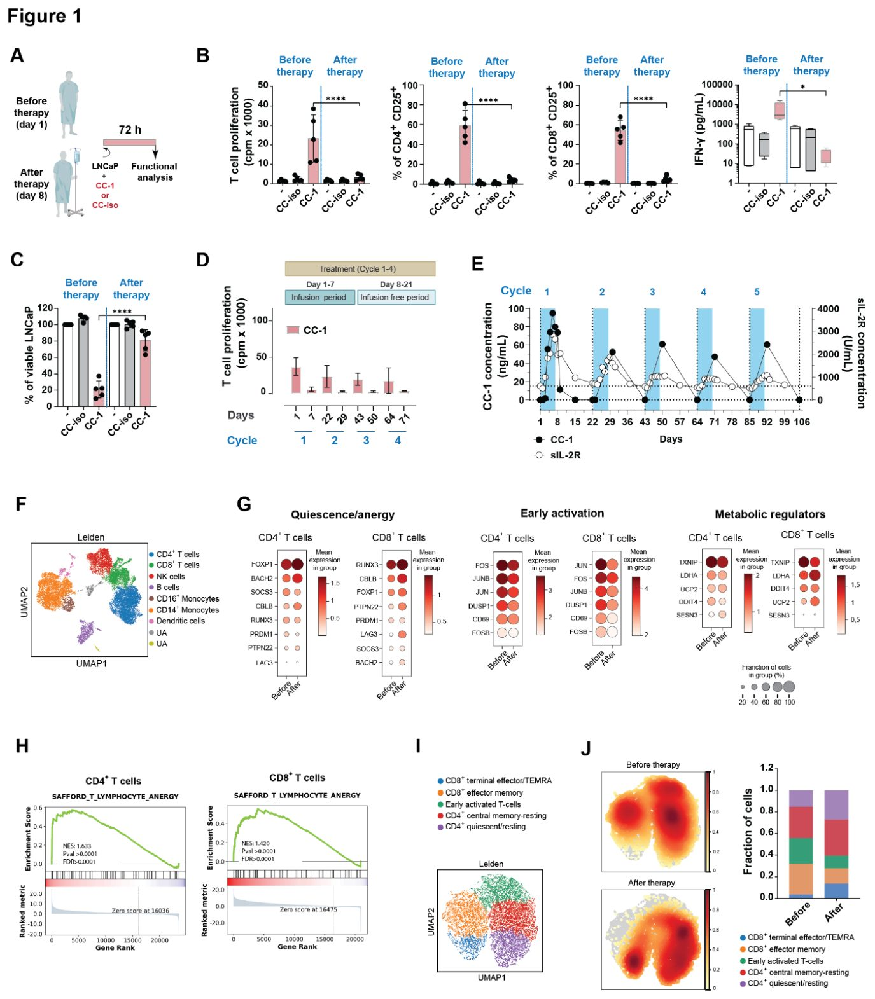
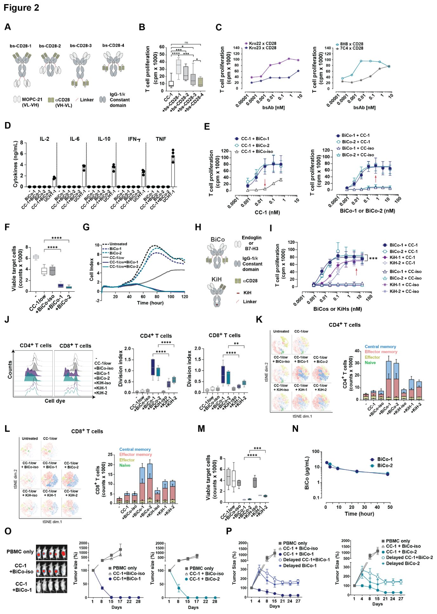
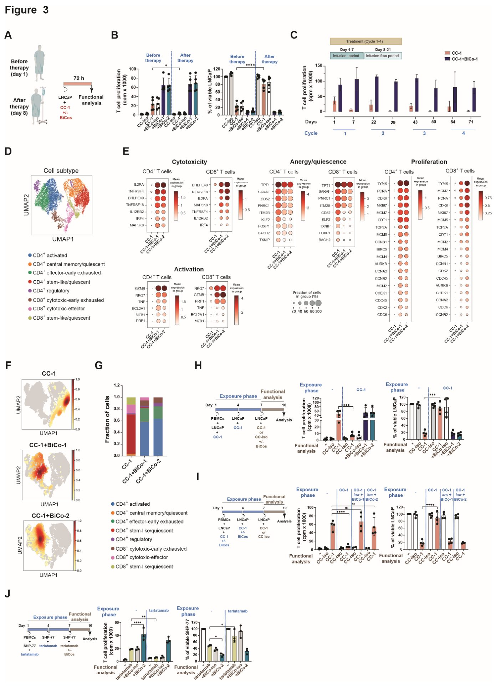

Ракты емдеу кезінде иммунитетті қалай қалпына келтіруге болады
{kind=link}

Арнайы биспецификалық антиденелер иммундық жасушаларды ісікке қарсы күресуге мәжбүрлейді, бірақ уақыт өте келе оларды әлсіретеді. Ғалымдар мұның себебін анықтап, қосымша молекулалық сигналдар арқылы Т-жасушалардың жұмыс қабілетін қайтару әдісін жасады. Тәжірибелер бұл тәсілдің ісікке қарсы иммунитетті толық қалпына келтіретінін көрсетті.
Басты ойлар
- TCE монотерапиясы Т-жасушаларының анергиясын тудырады.
- Екі валентті CD28 байланысы бар BiCos жасалды.
- BiCos пен TCE комбинациясы лимфоциттер функциясын қалпына келтіреді.
Толығырақ
CD3 рецепторын ынталандыратын TCE препараттары онкологияда қолданылады, бірақ олардың жеке терапиясы Т-жасушаларының функционалдылығын жоғалтады. Жалғыз жасушалық РНК секвенирлеу тәсілі бірінші сигналдың оқшаулануы CBLB және BACH2 гендерінің экспрессиясын арттырып, тыныштық күйін тудыратынын көрсетті.
Бұл мәселені шешу үшін зерттеушілер CD28-мен екі валентті байланысу арқылы екінші сигнал беретін биспецификалық костимуляторларды (BiCos) жасады. Бұл құрылым ісік антигендері мен жасушадан тыс матрикс үшін қатаң селективтілікті сақтайды.
Адамдастырылған тышқандардағы сынақтар BiCos мен TCE комбинациясы ісіктерді жоюға әкелетінін көрсетті. Молекулярлық талдау Т-жасушаларының пролиферативті қабілетінің толық қалпына келгенін растады.
Шектеулер
Нәтижелер жасушалық модельдерде, адамдастырылған тышқандарда және ерте фазадағы клиникалық сынақ үлгілерінде алынды.
Мақаланың толық талдауы
Түйіндеме
CD3 рецепторын ынталандыратын биспецификалық Т-жасушалық тартушылар (TCE) онкологиялық терапияда қарқынды дамып келеді. Біз қатерлі ісікпен ауыратын науқастарды тек TCE-мен емдеу T-жасушаларының гипореактивтілігіне, соның ішінде пролиферациялық және литикалық қабілеттерінің жойылуына әкелетінін анықтадық. Жеке жасушалық РНК секвенирлеу (single-cell RNA-sequencing) арқылы анэргия мен тыныштық күйінің транскрипциялық белгілері анықталды, олардың қатарына CBLB және BACH2 гендерінің артуы, сондай-ақ тек «Т-жасушаның 1-сигналының» берілуі салдарынан AP-1-ге тәуелді белсендіру бағдарламаларының басылуы кіреді.
Түсіндірме
Жеке жасушалық РНК секвенирлеу — бұл әрбір жеке жасушаның гендік белсенділігін талдауға және жасырын айырмашылықтарды көруге мүмкіндік беретін озық әдіс.
T-жасушалардың қызметін қалпына келтіру үшін біз жоғары тиімді bivalent CD28 байланысуы арқылы «2-сигналды» жеткізетін, сонымен бірге ісік жасушалары мен жасушадан тыс матрикс экспрессиялайтын антигендерге қатаң шектелген белсенділікті сақтайтын биспецификалық костимуляторларды (BiCos) жасадық.
Маңызды
Жасалған BiCos костимуляторлары CD28-мен байланысу арқылы маңызды 2-сигналды жеткізіп, TCE туындатқан лимфоциттердің гипореактивтілігін жояды.
Клиникаға дейінгі талдаулар BiCos TCE монотерапиясының тиімділігін күшейтетінін көрсетті, олардың белсенділігі univalent Knob-into-Hole CD28 костимуляторларынан асып түсіп, T-жасушаларының гипореактивтілігін қайтарады. Гуманизацияланған тышқандарда BiCos өте аз мөлшердегі TCE-мен бірлесіп, қалыптасқан ісіктердің жойылуын қамтамасыз етті.
Абайлаңыз
Деректер гуманизацияланған тышқандардағы клиникаға дейінгі үлгілерде алынды, сондықтан адамдарда қауіпсіздікті растау үшін клиникалық сынақтар қажет.
Соңында, BiCos TCE қабылдаған науқастардың Т-жасушаларындағы BACH2 және KLF2 жоғары экспрессиясы сияқты тыныштық күйінің молекулалық белгілерін кері қайтарып, жасуша функциясының толық қалпына келуіне және тұрақты ісікке қарсы иммунитеттің қалыптасуына әкелді.
Кіріспе
1980 жылдары жүре пайда болған иммунитеттің негізгі эфекторлық жасушалары — T-жасушаларының қызметін реттейтін орталық рецепторлар анықталып, сипатталды. Олардың ішіндегі алғашқысы T-жасушалық рецептор (TCR)/CD3 кешені болып, ол белсендіру үшін маңызды «1-сигналды» қамтамасыз етеді. Көп ұзамай CD28 маңызды «2-сигналды» беретін прототипті костимуляторлық рецептор ретінде анықталды. Кейіннен 4-1BB (CD137) және OX40 (CD134) сияқты қосымша костимуляторлық рецепторлар табылды. Костимуляция «1-сигналды» күшейтіп қана қоймай, тек TCR/CD3 стимуляциясынан кейін пайда болатын T-жасушаларының гипореактивтілігіне жол бермейтіні расталды. Сонымен қатар, CTLA-4 және PD-1 сияқты иммундық бақылау нүктелері T-жасушаларының белсенділігін шеkтейтін коингибиторлық сигналдарды беретіні анықталды. Бұл жаңалықтар клеточный иммунитетті терапевтік тұрғыдан реттеуге жол ашты.
CD3 стимуляциялайтын биспецификалық T-жасуша тартқыштарынан (TCE) және функционалдық жақын CAR-T жасушаларынан басқа, иммундық бақылау нүктелерінің ингибиторлары да T-жасушаларын тарту стратегияларын толықтырып, қазіргі уақытта онкологиялық емнің негізіне айналды. TCE және CAR-T арасындағы маңызды айырмашылық — соңғылары терапевтік тиімділікке қол жеткізу үшін тек CD3-тен ғана емес, сонымен қатар CD28 немесе 4-1BB сияқты костимуляторлық молекулалардан да сигналдарды талап етеді. Біз биспецификалық антителолар (bsAb) саласына костимуляторлық сигналдарды әлі 1980 жылдары енгізген едік: сол кезде авторлар TAAxCD3 және TAAxCD28 спецификалығы бар bsAb (TAA — ісікпен байланысқан антиген) тіркесімі ісік жасушаларына қарсы T-жасушаларының жоғары реактивтілігін қамтамасыз ететінін көрсетіп, осындай комбинацияны бағалайтын клиникалық сынақ жүргізген болатын.
Түсіндірме
> Биспецификалық антителолар мен CAR-T жасушалары — бұл қатерлі ісікті жою үшін ісік антигені мен иммундық рецепторларға бір мезгілде бағытталған жасанды ақуыздар немесе өзгертілген T-жасушаларын қолданатын заманауи иммунотерапия әдістері.
Одан кейін ісікке бағытталған костимуляцияны клиникалық дамыту 2006 жылы TGN1412 (Tegenero) оқиғасы салдарынан қатты тежелді, сол кезде CD28-ге қарсы суперагонистік моноклоналды антитело сынаққа қатысқан сау еріктілерде өмірге қауіп төндіретін цитокиндік боран синдромын тудырған еді.
Биспецификалық костимуляторларды әзірлеу
Оңтайландырылған биспецификалық костимуляторларды (BiCo) жасау жөніндегі күш-жігеріміз PSMA-ға бағытталған TCE қолданылған клиникалық зерттеу барысындағы соңғы бақылаулардың арқасында күшейе түсті. Біз бұл жерде, біздің білуімізше, алғаш рет TCE монотерапиясын ұзақ уақыт қолдану белсендіру бағдарламаларының басылуына, сондай-ақ канондық анергия мен тыныштық (квиесценция) гендерінің қосылуына байланысты пациенттің T-жасушаларының функционалдық гипореактивтілігін тудыруы мүмкін екенін хабарлаймыз.
Маңызды
> TCE монотерапиясын ұзақ мерзімді қолдану пациенттің T-жасушаларының белсендіру бағдарламаларын өшіріп, олардың гипореактивтілігі мен тыныштық күйін туындатады.
T-жасушаларының қызметін күшейту және биваленттілік CD28 антителоларының агонистік белсенділігін күрт арттыратынын ескере отырып, біз бұрын қолжетімді болған құрылымдардан айырмашылығы, тек ісікпен шектелген белсенділікті сақтай отырып, бивалентті TAA және CD28 байланыстырушы бөліктері бар BiCo әзірледік. Нысана ретінде біз тек ісік жасушаларында ғана емес, сонымен қатар ісіктердің жасушадан тыс матриxсында (жаңадан түзілген тамырларды қоса алғанда) экспрессияланатын эндоглин мен B7-H3 таңдадық. Сондай-ақ, біз сау тіндерде қиылыспайтын екі түрлі TAA қолдану TCE мен BiCo комбинациясы үшін қосымша қауіпсіздік деңгейін қамтамасыз етеді деп есептедік, өйткені соңғыларға костимуляторлық функцияны атқару үшін TCE тарапынан «1-сигнал» және белсендіру қажет.
Абайлаңыз
> Ұсынылған деректер жасушалық модельдер мен пациенттердің үлгілеріне негізделген; кез келген доклиникалық қорытындылар клиникалық жағдайда қатаң тексеруді талап етеді.
Бұл жұмыста біз бивалентті BiCo көмегімен CD28 арқылы сигналдарды жеткізу TCE монотерапиясы кезінде пайда болатын T-жасуша гипореактивтілігінің алдын ала алатынын және оны кері қайтара алатынын көрсетеміз. Бұған пролиферативті жасуша циклі бағдарламаларын қалпына келтіру, эфекторлық профильдер мен белсендіру жолдарын күшейту, сондай-ақ T-жасуша анергиясы мен тыныштық белгілерін жою арқылы қол жеткізіледі, бұл T-жасушаларының ісікке қарсы терапевтік иммунитетінің күрт артуына әкеледі.
Нәтижелер
Жеке TCE агентімен емдеу Т-жасушаларының гипореактивтілігін тудырады
Метастазды кастрацияға төзімді простата обыры (mCRPC) бар науқастардың қатысуымен жүріп жатқан 1a-фазалы клиникалық сынақта біздің PSMA-бағытталған TCE CC-1 препаратын жеке терапия ретінде қолданған кезде PSA деңгейінің жылдам, бірақ қысқа мерзімді төмендеуі байқалды (NCT04104607). Емге дейін және одан кейін алынған осы науқастардың шеткі қан мононуклеарлы жасушаларын (PBMC) қолдана отырып жүргізілген ex vivo талдауы (1A-сурет) CD4⁺ және CD8⁺ Т-жасушаларының саны бірдей болғанына қарамастан, CD3-стимуляциясына жауап ретінде Т-жасушаларының белсенуі, пролиферациясы, цитокиндердің секрециясы мен цитолитикалық белсенділігі күрт төмендегенін көрсетті (1-сурет, B және C; S1-қосымша сурет, A және B). Лонгитюдтік ex vivo талдаулары ем екі аптаға тоқтатылғаннан кейін науқастардың Т-жасушалары бұл гипореактивті күйден ішінара қалпына келетінін көрсетті (1D-сурет, мысалы, 7-күн мен 22-күнді салыстырыңыз; S1C-қосымша сурет). Алайда, TCE емдеуге әлсіз жауаптар (1D-сурет, 1-күн мен 22 және 64-күнді салыстырыңыз; S1C-қосымша сурет) және емдеу циклдарының саны артқан сайын ерітіндідегі IL-2 рецепторының (sIL-2R) сарысулық шыңының төмендеуі арқылы көрінетіндей, жалпы реактивтілік терең деңгейде басылған күйінде қалып, науқастар арасында айтарлықтай өзгеріске ұшырады (1E-сурет және S1D-қосымша сурет).
Маңызды
TCE CC-1 препаратымен монотерапия классикалық сарқылу белгілерінсіз Т-жасушаларының терең, бірақ ішінара қайтымды гипореактивтілігін тудырады.
Гипореактивті Т-жасушалар сарқылу маркерлерінің (мысалы, PD-1: CD4⁺ Т-жасушаларында P = 0.7 және CD8⁺ Т-жасушаларында P = 0.5) немесе қартаю мен терминалды дифференцировкаға тән фенотиптің (PD-1, CD57, KLRG1, CD27/CD28 жоғалуы) айтарлықтай жоғарылауын көрсетпеді (S1-қосымша сурет, E және F). TCE еміне дейін және кейін алынған PBMC үлгілеріне жүргізілген бір жасушалы РНК секвенирлеуі (scRNA-seq) жеті түрлі иммундық жасуша кластерін, соның ішінде CD4+ Т-жасушалары, CD8+ Т-жасушалары, NK-жасушалары, В-жасушалары, CD16+ моноциттері, CD14+ моноциттері және дендритті жасушаларды анықтады (1F-сурет). 1-ші және 8-ші күнгі жұптастырылған үлгілерді салыстырмалы scRNA-seq талдауы TCE емі Т-жасушаларының анергиясы/тыныштық күйіне тән үйлестірілген транскрипциялық бағдарламаны қоздыратынын көрсетті: реттеуші метаболикалық факторлар мен анергияға/тыныштыққа байланысты гендердің (CBLB, BACH2, FOXP1, PTPN22, LAG3, LDHA және UCP2) жоғарылауы және ерте белсену гендерінің (FOS, FOSB, JUN, JUNB, DUSP1, CD69) төмендеуі орын алды (1G-сурет).
Түсіндірме
scRNA-seq және GSEA талдаулары жасушаішілік үдерістерді және гендер топтарының жұмысын зерттеуге мүмкіндік беріп, жасушаның анергия күйіне ауысқанын айқын көрсетеді.
Бұл ген экспрессиясының профилі AP-1 белсену бағдарламалары басылған және CBLB экспрессиясының артуы сияқты анергияға ұқсас тежеуші белгілері бар BACH2 басқаратын тыныштық күйіне сәйкес келеді. Осыған сәйкес, гендер жиынтығын байыту талдауы (GSEA) TCE әсер еткен Т-жасушаларында анергияға байланысты гендер жиынтығының айтарлықтай байығанын анықтады (CD4⁺ Т-жасушаларында NES = 1.633, p < 0.0001 және FDR < 0.0001; CD8⁺ Т-жасушаларында NES = 1.420, p < 0.0001 және FDR < 0.0001) (1H-сурет және S2-қосымша сурет). Субкластерлеу және тығыздықты талдау (1-сурет, I және J) CD8⁺ Т-жасушалары эффекторлы-жады күйінен дисфункционалды терминалды эффекторға ұқсас күйге ауысқанын, ал CD4⁺ Т-жасушалары ерте белсенген/орталық жады фенотиптен тыныштық күйіне өткенін растады. Бақыланған субкластерлердің таралуы созылмалы, теңгерімсіз стимуляция кезіндегі өзгерген дифференцировка үлгілеріне сәйкес келеді.
Оңтайландырылған биспецификалық CD28 костимуляциясы үшін формат және байланыстырғышты таңдау
Моноспецификалық CD28 антиденелері костимуляторлық белсенділікті көрсету үшін моновалентті емес, бивалентті байланысуды қажет етеді. Тиісінше, бивалентті CD28 байланысуы костимуляторлық bsAb функцияларын жақсарта алады, бірақ бұл нысанамен шектелген белсенділікті жоғалту қаупін тудырып, жанама әсерлерге әкелуі мүмкін. Осы дилемманы шешу үшін біз мақсатты емес ерекшелігі бар төрт бивалентті BiCo форматын жасадық және сипаттадық (2A-сурет және S3-қосымша сурет, A және B). Олардың екеуі (bs-CD28-1 және bs-CD28-2) Т-жасушаларындағы CD28-ге жоғары аффиндігі бар Fab-бөліктері арқылы байланысса, қалған екеуі (bs-CD28-3 және bs-CD28-4) ауыр немесе жеңіл тізбектерге біріктірілген бір тізбекті anti-CD28 домендерін қамтыды (S3C-қосымша сурет).
Маңызды
Төрт BiCo форматының ішінде тек bs-CD28-4 форматы ісік антигені болмаған кезде Т-жасушаларын ынталандырмай, қатаң түрде нысанаға бағытталған белсенділікті көрсетті.
«1-сигналды» қамтамасыз ететін TCE (CC-1) субмитогендік дозаларымен бірге тек bs-CD28-4 форматы ісікпен байланысқан антиген (TAA) болмаған кезде Т-жасушаларының стимуляциясының болмауымен сипатталатын қатаң түрде нысанаға бағытталған белсенділікті көрсетті (2B-сурет). Осыған сәйкес, bs-CD28-4 форматы эндоглин мен B7-H3-ке бағытталған BiCo жасау үшін таңдалды. Бұл TAA солидті ісіктерде, сондай-ақ жаңа түзілген тамырларды қоса алғанда, ісікпен байланысқан жасушадан тыс матриксте (ECM) кеңінен экспрессияланады (16, 17) және сондықтан CC-1 тудырған иммундық жауаптарды күшейтуге оңтайлы түрде сәйкес келеді (S3D-қосымша сурет). Жаңадан жасалған және бұрын сипатталған (18) mAb панельдерінен оңтайлы аффиндік негізінде екі эндоглин және екі B7-H3 байланыстырғыштары таңдалды (S3-қосымша сурет, E және F). Сәйкес төрт құрылым клондалып, сипатталғаннан кейін, Т-жасушаларының пролиферациясын қоздыруды салыстырмалы талдау негізінде BiCo-1 (endoglin-Kro22xCD28) және BiCo-2 (B7-H3-8H8xCD28) деп аталатын екі BiCo негізгі кандидаттар ретінде таңдалды (S3-қосымша сурет, G-I).
BiCo молекулаларының функционалдық сипаттамасы
Ісігі жоқ гуманизацияланған тышқандарда жүргізілген in vivo қауіпсіздік сынақтары барысында, UCHT1 бақылау антиденесінен айырмашылығы, BiCo-1 де, BiCo-2 де дербес түрде немесе CC-1 препаратымен бірлескенде ешқандай цитокиннің босап шығуына әкелмейтіні анықталды (2D сурет). Бұл BiCo қолданған кезде T-жасушаларының мақсатты емес активациясы жоқ екенін және комбинацияланған әдістің нысанаға қатаң тәуелді екенін растайды.
Нысана-антигені бар және жоқ жасушалардың қатысуымен жасалған талдаулар, сондай-ақ дозаға тәуелділік зерттеулері белсенділіктің ісік антигеніне қатаң тәуелді екенін көрсетті. T-жасушаларының максималды пролиферациясы 25 pM CC-1 және 0.5 nM BiCo концентрацияларында байқалды (2E сурет және 4 пен 5 қосымша суреттер, A және B). Дәл осы концентрациялар кейінгі тәжірибелер үшін пайдаланылды. Екі BiCo қосылысы да TCE басқаратын CD4⁺ және CD8⁺ T-жасушаларының активациясын, IFN-γ секрециясын және ісік жасушаларын жоюды күшті түрде арттырды (2 сурет, F және G; 5 қосымша сурет, C-E). Әсіресе ұзақ мерзімді сынақтарда BiCo мен төмен дозалы TCE комбинациясы, тіпті жоғары дозадағы (1000 pM) жалғыз TCE-мен салыстырғанда да, айтарлықтай күшейтілген (мысалы, CD8⁺ T-жасушалары үшін BiCo-1 бойынша P = 0.03 және BiCo-2 бойынша P = 0.004) T-жасуша пролиферациясын және эффекторлық пен орталық жады жасушаларының айқын өсуін қамтамасыз етті (5 қосымша сурет, F және G).
Маңызды
Екі валентті BiCo молекулалары төмен дозалы TCE-мен бірге CD4+ және CD8+ T-жасушаларының нысанаға тәуелді пролиферациясын күшейтеді (P = 0.03 және P = 0.004) және ісікті тиімді жояды.
Біздің валентті BiCo форматымызды қазіргі уақытта клиникалық сынақтардан өтіп жатқан моновалентті Knob-into-Hole CD28 костимуляторларымен (KiH) (NCT06826768, NCT04626635, NCT04590326) салыстыру үшін біз BiCo құрамында қолданылатын TAA және CD28 байланыстырғыштары бар KiH-1 және KiH-2 құрылымдарын жасадық (2H сурет және 6 қосымша сурет, A және B). Күтпеген жерден, аффинділік тұрғысынан KiH құрылымдары біздің BiCo молекулаларымызға ұқсас болып шықты (3I қосымша сурет және 6 қосымша сурет, C-E). Әрі қарай, біз TCE-мен бірге қолданылған bivalent BiCo форматының костимуляциялық әлеуетін моновалентті KiH құрылымдарымен салыстырдық. Концентрациялардың кең диапазонында BiCo молекулаларының костимуляциялық белсенділігі KiH аналогтарынан анық басым түсті (2I сурет).
Түсіндірме
Knob-into-Hole (KiH) технологиясы ауыр тізбектерді модификациялау арқылы биспецификалық антиденелерді жасау үшін қолданылатын гетеродимеризация әдісі болып табылады.
Кейінгі талдауларда BiCo және KiH молекулалары үшін қанықтырушы концентрация ретінде nM деңгейін пайдаланып, екі валентті BiCo форматы CD4+ және CD8+ T-жасушаларының пролиферациясын (CD4+ үшін BiCo және KiH арасында P < 0.0001; CD8+ үшін BiCo-1 және KiH-1 арасында P < 0.0001, BiCo-2 және KiH-2 арасында P = 0.0014), жадының қалыптасуын және ісік жасушаларының лизисін (BiCo-1 пен KiH-1 үшін P < 0.0001, BiCo-2 бен KiH-2 үшін P = 0.0002) айтарлықтай жоғары деңгейде ынталандыратынын анықтадық (2 сурет, J-M және 7 қосымша сурет, A-E). Бұл тиімділік айырмашылығы екі валентті BiCo молекулаларының CD28 байланыстырушы бөлігінің диссоциация жылдамдығының (off-rate) 5 есе азаюына байланысты болуы мүмкін (6D қосымша сурет).
C57BL/6 тышқандарында жүргізілген фармакокинетикалық талдаулар BiCo форматының сарысудағы жартылай шығарылу кезеңі классикалық моноклоналды антиденелерге ұқсас екенін көрсетті (2N сурет). Адамның PBMC жасушалары егілген NSG тышқандарында CC-1 және BiCo препараттарымен бір мезгілде емдеу (тек TCE емес) ірі LNCaP-E ісіктерін толығымен жойды және жануарлардың өмір сүру ұзақтығын статистикалық тұрғыдан айтарлықтай жақсартты (P < 0.0001, 2O сурет, 7F қосымша сурет). Бастапқы CC-1 монотерапиясынан кейін BiCo препаратын кешіктіріп енгізу онша айқын емес, бірақ тек CC-1 қолданғанға қарағанда әлдеқайда тиімді нәтиже берді.
Абайлаңыз
Нәтижелер жануарлар модельдерінде алынғандықтан, оларды адам клиникасына тасымалдау кезінде сақтық таныту қажет.
BiCos Т-жасушаларының гипореактивтілігін жояды және оның алдын алады
TCE терапиясынан бұрын (1-цикл, 1-күн) және кейін (8-күн) алынған бес пациенттің шеткі қан мононуклеарлы жасушаларын (PBMC) қолдана отырып, Т-жасушалардың пролиферациясы мен ісік жасушаларын жою қабілетін талдау BiCos қолдану гипореактивтілікті толығымен жоятынын көрсетті. Айта κету κερәк, TCE-ге жауап берген де, жауап бермеген де пациенттердің Т-жасушаларында BiCos белсенділік деңгейін тек TCE-нің жоғары концентрациясымен (жауап беретін жасушаларда) қол жеткізілген мәндерден едәуір асырып түсірді (3-Сурет, A және B, P < 0.0001). Бұл әсер кейінгі емдеу циклдарында алынған жасушаларды талдағанда да сақталды (3C-Сурет).
Маңызды
BiCos қолдану Т-жасушаларының гипореактивтілігін толығымен кері қайтарып, олардың белсенділігін монотерапия деңгейінен жоғары көтереді (P < 0.0001) және эффекторлық жад популяцияларын қалпына келтіреді.
Жеке жасушалар деңгейіндегі транскриптомдық талдау BiCo терапиясы MCM отбасы мүшелері мен CDC гендерінің экспрессиясын күшейтуді, сондай-ақ эффекторлық бағдарламалар мен белсендірумен байланысты жолдарды (GZMB, NKG7, TNF, IL2RA, IRF4) қоса алғанда, жасуша циклінің пролиферативті бағдарламасын қайта бастағанын көрсетті. Сонымен қатар, KLF2, PNRC1, TXNIP, CD52, SARAF және BACH2 төмендеуі арқылы T-жасушаларының анергиясы мен тыныштық күйінің негізгі белгілері кері қайтарылды (3-Сурет, D және E). Қосымша тығыздықты талдау (3-Сурет, F және G) BiCo терапиясы CD8⁺ Т-жасушаларының дисфункционалды терминалды эффектор тәрізді күйлерінен эффекторлық жад популяцияларына қарай қайта ығысуымен байланысты екенін көрсетті. Параллельді түрде CD4⁺ Т-жасушалары тыныш фенотиптерден ерте белсендірілген орталық жад күйлеріне ауысты, бұл белсендіру мен функционалдық қалпына келу тепе-теңдігіне сәйкес келеді.
Түсіндірме
GSEA — бұл белгілі бір әсерге жауап ретінде жасушадағы тұтас ген топтарының белсенділігі бірлесіп өзгеретінін анықтауға мүмкіндік беретін статистикалық талдау әдісі.
TCE терапиясы кезінде гипореактивтіліктің пайда болуы PBMC және нысана жасушаларды 7 күн бойы TCE әсеріне ұшырату, содан кейін TCE-мен қайта стимуляциялау кезіндегі реактивтілікті бағалау арқылы in vitro модельденді. Пациенттердегідей, CC-1-дің ұзақ әсер етуі ісік нысаналары болмаған жағдайда CC-1 әсері Т-жасушаларының реактивтілігіне әсер етпегендіктен, нысанамен байланысуға тәуелді Т-жасушаларының гипореактивтілігіне әкелді. Пациенттердің Т-жасушаларынан алынған деректерге сәйкес, гипореактивтілікті бірінші 7 күндік культивация кезінде TCE әсері және функционалдық талдау кезеңінде BiCos болуы арқылы толығымен алдын алуға және кері қайтаруға болатын еді (3-Сурет, H және I; S7G қосымша суреті).
Абайлаңыз
Алынған нәтижелер in vitro эксперименттеріне және пациенттердің шектеулі үлгілеріне (n=5) негізделген, сондықтан клиникалық тексеруді қажет етеді.
Ұқсас нәтижелер тарлатамаб көмегімен де алынды (3J-Сурет), бұл біздің TCE туындатқан Т-жасуша гипореактивтілігі туралы тұжырымдарымызды басқа клиникалық препараттарға да таратуға мүмкіндік береді. Тарлатамаб жақында ұсақ жасушалы өкпе рагын (SCLC) емдеу үшін мақұлданды және ісік жасушаларындағы DLL3 пен Т-жасушаларындағы CD3-ке байланысатын екі бір тізбекті айнымалы фрагменттен (scFv) тұратын, модификацияланған Fc доменімен біріктірілген жартылай шығарылу периоды ұзартылған арнайы биспецификалық Т-жасуша тартқышы (BiTE) болып табылады.
Жиынтықтай алғанда, біздің нәтижелеріміз TCE монотерапиясы терминалды сарқылудан гөрі функционалдық анергиямен немесе тыныштықпен байланысты ішкі жолдардың өзгеруімен сипатталатын Т-жасуша гипореактивтілігін тудыратынын көрсетеді. BiCos арқылы CD28 сигналингін қамтамасыз ету арқылы Т-жасушаларының функционалдығын қалпына келтіруге және гипореактивтіліктің алдын алуға болады, бұл Т-жасушаларының ісікке қарсы иммунитетін бұрын-соңды болмаған деңгейге дейін күшейтеді.
Талқылау
T-жасушаларының гипореактивтілік механизмдері мен биспецификалық антиденелерді талқылау
Ісік антигендері мен CD3 рецепторына бағытталған дәстүрлі биспецификалық антиденелер (TCE) B-жасушалық қатерлі ісіктерді емдеуде сәтті қолданылып, ұсақ жасушалы өкпе рагын емдеу үшін тартиреламабтың мақұлдануымен және 35% жалпы жауап беру жиілігімен басқа ісік түрлерінде де белсенді енгізілуде. Алайда, пациенттердің едәуір бөлігі, әсіресе солидті ісіктер кезінде, бұл терапияға жауап бермейді, бұл сәтсіздік себептерін терең зерттеуді талап етеді. NCT04104607 клиникалық зерттеуінде PSMAxCD3 TCE CC-1 қабылдаған простата рагы бар пациенттердің T-жасушаларын талдау барысында, авторлар ұзақ мерзімді TCE терапиясы T-жасушаларының айқын функционалдық гипореактивтілігіне әкелетінін анықтады. Бұл күй екі апталық үзілістерден кейін де толық жойылмады, мұны емдеу циклдарының саны артқан сайын сарысулық sIL-2R шыңдық деңгейлерінің төмендеуі растайды. Бұл деректер TCE терапиясы пациенттерде T-жасушаларының резистенттілігін тудыруы мүмкін екенін алғаш рет көрсетеді. PBMC-ны in vitro тартиреламабпен стимуляциялаған кезде де осындай басылу байқалды. Болашақ зерттеулер оңтайлы мөлшерлеуді анықтау үшін TCE сызбасы мен гипореактивтілік арасындағы байланысты ашуы тиіс.
TCR/CD3 кешенінің оқшауланған стимуляциясы T-жасушалары гипореактивтілігінің дамуына әкелетіні белгілі. Бұл күй интерлейкин-2 өндірісінің бұзылуымен, пролиферацияның тоқтауымен және реттеуші бағдарламалардың қосылуымен сипатталады. Бұл жұмыста алғаш рет пациенттердің T-жасушаларын тікелей талдау арқылы TCE монотерапиясы FOS және JUN отбасыларының AP-1 транскрипциялық факторларының басылуына, белсендіру және метаболикалық бағдарламалардың жоғалуына, сондай-ақ BACH2, FOXP1, CBLB, PNRC1, PTPN22 және метаболикалық репрессорлар TXNIP пен UCP2 сияқты реттеушілердің индукциясына әкелетіні көрсетілді. PD-1 немесе терминалды дифференцировка маркерлерінің тұрақты өсуі байқалмады, бұл қайтымсыз шаршау немесе қартаю қаупін жоққа шығарады. Оның орнына транскрипциялық профиль ісік антигендерінің созылмалы әсері кезінде сипатталатын ерте «салқындық» күйіне сәйкес келеді. Бір жасушалық талдау CD8⁺ және CD4⁺ T-жасушаларының аралық сатыларда тоқтап қалатынын көрсетті. Бұл BACH2 ақуызының AP-1 арқылы жүретін эффекторлық дифференцировканы тежеп, төзімділікті сақтайтыны туралы бұрынғы бақылаулармен толық сәйкес келеді.
Маңызды
Ұзақ мерзімді TCE монотерапиясы AP-1 басылуы және BACH2 индукциясы арқылы T-жасушаларының функционалдық гипореактивтілігін тудырады.
Түсіндірме
Гипореактивтілік — бұл T-жасушаларының стимуляцияға функционалды сезімталдығының жоғалуы, олар ісікке қарсы белсенді әрекет ете алмайды.
Бұрын CD28 молекуласы арқылы қосымша екінші сигналдар TCR/CD3 шамадан тыс стимуляциясы туындатқан гипореактивтілікке қарсы тұра алатыны хабарланған болатын. Осы деректер мен бақылауларға сүйене отырып, авторлар антиденелер терапиясының әлеуетін толық ашу үшін биспецификалық костимуляциялық молекулалар (BiCos) қажет деген қорытындыға келді. CD28-ге қарсы ерітілетін бивалентті антиденелер күшті белсенділікке ие болғанымен, олар мақсатты шектеу талабына қайшы келеді. Бұл жұмыста CD28 үшін биваленттілікті сақтай отырып, толық мақсатты түрде жұмыс істейтін тетравалентті BiCo форматы ұсынылады. CD28 байланыстыратын екі scFv бөлігінің кеңістіктік конформациясы тек нысана жасушамен байланысқаннан кейін ғана агонистік белсенділік көрсетуге мүмкіндік береді. Ісік жасушаларында және ісік матриксінде жақсы экспрессияланатындықтан, эндоглин (BiCo-1) және B7-H3 (BiCo-2) жетекші құрылымдар үшін TAA ретінде таңдалды.
Биспецификалық костимуляция тиімділігін эксперименталды бағалау
Түрлі in vitro модельдерінде BiCo-1 және BiCo-2 өте төмен концентрациялардың өзінде T-жасушаларының ісікке қарсы реактивтілігін күшті ынталандырды, бұл клиникалық қолдану кезінде жанама әсерлерді азайтуға мүмкіндік береді. Біріктірілген терапия TCE монотерапиясынан, тіпті жоғары концентрацияларда да, айтарлықтай асып түсті.
Абайлаңыз
Алынған деректер in vitro модельдері мен шектеулі клиникалық таңдауларға негізделген, сондықтан кең көлемді клиникалық сынақтарда расталуы тиіс.
TCE және BiCo комбинациясының басымдығы
TCE және BiCo біріктірілген терапиясының тиімділігі тышқандардағы ксенотрансплантат модельдерінде расталды, мұнда тек бірлескен емдеу ісікті толық жоюға әкелді. Біздің бивалентті BiCo конструкцияларымызды KiH технологиясы арқылы жасалған қолжетімді моновалентті аналогтармен салыстыру тетравалентті BiCo форматының костимуляциялық қабілеті айтарлықтай жоғары екенін көрсетті. Таңқаларлық жайт, айырмашылық CD28-мен байланысу аффинділігінде емес, диссоциация жылдамдығында (off-rates) болды, ол моновалентті конструкцияларда шамамен 5 есе жылдам еді. Бұл BiCo-ның CD28 молекуласымен тұрақтырақ кешен түзетінін білдіреді.
Маңызды
BiCo-ның бивалентті құрылымы CD28-мен тұрақты байланысуды қамтамасыз етеді және ісіктерді жоюда моновалентті аналогтардан басым түседі.
Алайда, кинетикалық тұрақтандыру мен рецепторлардың құрылымдық кластерленуінің үлесін бөліп көрсету қиын, өйткені бивалентті архитектура екі параметрге де әсер етеді. Сондықтан BiCo форматының артықшылығын тек бір механизммен түсіндіруге болмайды.
Т-жасушалардың функционалдығын қалпына келтіру
Біздің деректеріміз BiCo-ның Т-жасушалардың эффекторлық қабілетін күшейтіп қана қоймай, TCE монотерапиясын алған пациенттердегі гипореактивтілік күйін еңсеріп, оны қалпына келтіре алатынын көрсетеді. Бұл TCE тудырған анергия және тыныштық күйімен байланысты гендер экспрессиясының төмендеуімен және активация, цитотоксикалық, пролиферация мен цитокиндік жауапқа қатысты гендер экспрессиясының қалпына келуімен қатар жүреді. Бұл жасушаларға G0/G1 фазасындағы тоқтауды еңсеріп, пролиферацияға өтуге мүмкіндік береді. Бұл нәтижелер CD28 сигналдары IL-2 өндірісін күшейту және BACH2 делдалдығымен репрессияны жою арқылы анергия күйін бейтараптандыратынын көрсететін соңғы зерттеулермен сәйкес келеді.
Түсіндірме
Анергия — бұл Т-жасушалардың иммунологиялық толеранттылық немесе «ұйқы» күйі, олар стимулға жауап бермейді, бұл терминалды сарқылудан айырмашылығы, қайтымды процесс.
Қорытындылай келе, TCE монотерапиясы Т-жасушалардың гипореактивтілігіне әкелуі мүмкін, бұл емдеу тиімділігін төмендетеді. DLL3xCD3 (тарлатамаб) биспецификалық антиденесін қолдану арқылы алынған клиникаға дейінгі модельдеріміз TCE терапиясының сыныпқа тән әсерін көрсетеді. BiCo қолдану пролиферативтік әлеует пен цитотоксикалық белсенділікті сақтайды, сонымен қатар TCE тудырған молекулалық қолтаңбаны жояды. Біз шартты CD28-костимуляцияны иммунотерапия тиімділігін арттыру стратегиясы ретінде қарастырамыз. TCE және BiCo комбинациясын зерттейтін клиникалық сынақ 2026 жылы басталады.
Абайлаңыз
Қорытындылар клиникаға дейінгі модельдер мен пациенттер үлгілерін талдауға негізделген; комбинацияның клиникалық тиімділігі әлі алдағы сынақтарда расталуы керек.
Әдістер
Жыныс биологиялық айнымалы ретінде
Зерттеуге тек метастазды кастрацияға төзімді қуықасты безінің обырымен ауыратын ер адамдар қатысты. In vivo эксперименттері аналық тышқандарда жүргізілді, себебі бұл ісіктердің біркелкі орнығуын қамтамасыз етеді және тәжірибелік топтар арасындағы өзгермелілікті азайтады.
Пациенттердің үлгілері және жасушалық желілер
PBMC үлгілері CC-1 (PSMAxCD3 биспецификалық антиденесі) препаратын бағалайтын I фазалық клиникалық сынақ (NCT04104607) аясында бес пациенттен алынды. Қан CC-1 терапиясы басталғанға дейін және 7 күн үздіксіз қолданғаннан кейін алынды: 1-күні 78 мкг, 2-күні 215 мкг және 3-7 күндері күн сайын 826 мкг. Жасушалар Biocoll ерітіндісін қолдану арқылы тығыздық градиенті центрифугасымен бөліп алынды.
Түсіндірме
PBMC (перифериялық қанның мононуклеарлы жасушалары) — бұл лимфоциттер мен моноциттерден тұратын қан фракциясы, ол иммунологиялық зерттеулерде терапияға жауапты бағалау үшін жиі қолданылады.
LNCaP және SHP-77 жасушалық желілері DSMZ және ATCC биобанктерінен алынды. LNCaP-E (эндоглин экспрессиялайтын) және LNCaPKO (B7-H3 нокаутты) желілерін жасау үшін лентивирустық трансдукция қолданылды. Культивация 10 мкг/мл пуромицинмен, ал LNCaPKO үшін қосымша 1 мкг/мл генетицинмен жүргізілді. Барлық желілер микоплазманың жоқтығына тұрақты тексерілді.
Эндоглинге қарсы моноклоналды антиденелерді алу
8 апталық BALB/c тышқандары эндоглинмен трансфекцияланған Sp2/0-Ag14 жасушаларымен ішпердеішілік иммунизацияланды. Екі апталық аралықпен төрт ретке дейін иммунизация жасалды, жасушалар біріккенге дейін төрт күн бұрын соңғы бустер жасалды. Спленоциттер PEG 1500 көмегімен Sp2/0-Ag14 миелома жасушаларымен біріктірілді. Гибридомалар HAT ортасында іріктеліп, клондар ағынды цитометрия арқылы тексерілді, субклондалды және криоконсервацияланды.
Биспецификалық антиденелерді жасау және тазарту
Эндоглин, B7-H3 және бақылау MOPC-21 үшін вариабельді домендер CHO жасушаларында экспрессия үшін кодон-оңтайландырылды. Fc-функцияларын басу үшін LALA (L234A/L235A) және жартылай ыдырау мерзімін ұзарту үшін YTE (M252Y/S254T/T256E) мутациялары бар IgG1κ қаңқасы қолданылды. CD28 scFv фрагменті глицин-серин байланыстырғышы арқылы жалғанды. «Knob-into-hole» (KiH) құрылымы үшін CH3 доменіне мутациялар енгізілді (knob: T366W; hole: T366S/L368A/Y407V). Тазарту А ақуызының аффинді хроматографиясымен жүргізілді, тазалығы SDS-PAGE және гель-фильтрациямен тексерілді. Эндотоксин деңгейі <0,5 U/мл құрады.
Байланысу кинетикасы және аффинділік
Кинетика мен аффинділік беттік плазмонды резонанс (SPR) және биоқабатты интерферометрия (BLI) әдістерімен өлшенді. Байланысу параметрлері (kon, koff) және диссоциация константалары (K_D) BIAevaluation v4.1 және Octet Data Analysis v11.1 бағдарламаларының көмегімен есептелді. LNCaP-E және Т-жасушаларындағы антигендермен байланысуы ағынды цитометрия (BD FACSCanto II, BD FACSCalibur) арқылы талданды, деректер FlowJo-да өңделді, ал EC₅₀ мәндері GraphPad Prism 9-да есептелді.
Жеке жасушалық транскриптомикалық профильдеу және есептеу талдауы
Простата обырымен ауыратын науқастардан алынған PBMC үлгілерін дайындау 10× Genomics Feature Barcode хаттамасына сәйкес жүргізілді. Үлгілерді мультиплекстеу және партия әсерін азайту үшін донорлық жасушалар TotalSeq-C антиденелерімен белгіленді (SN 1-кесте). Жасушалар Chromium X жүйесі арқылы GEMs ішіне капсулаланды. 5′ GEX, TCR (VDJ) және SP кітапханалары Chromium Next GEM Single Cell 5′ HT v2 жиынтықтарымен дайындалды. Секвенирлеу Illumina NovaSeq 6000 платформасында орындалды. Деректерді өңдеу, туралау (GRCh38-202-A) және есептеу Cell Ranger 7.1.0 бағдарламасында, ал визуализация Scanpy 1.11.1 және Seurat көмегімен жүзеге асырылды.
Түсіндірме
Мультиплекстеу әдісі әртүрлі донорлардан алынған жасушаларды бір тәжірибеде біріктіруге мүмкіндік береді, бұл техникалық айырмашылықтарды азайтады.
3 жасушадан кем экспрессияланған гендер, сондай-ақ митохондриялық, рибосомалық гендер, lncRNA және псевдогендер талдаудан шығарылды. Кластерлеу Leiden алгоритмі арқылы жүргізілді. Ex vivo және in vitro үлгілері үшін кластерлеу параметрлері: n_pcs 13–25, n_neighbors 25–30, min_dist 0.3–0.5, resolution 0.21–0.63. CD3+ жасушаларын субкластерлеу үшін n_pcs 5–31, n_neighbors 5–15, min_dist 0.45–0.7 және resolution 0.1–0.4 параметрлері қолданылды. DEG-лер Wilcoxon тесті және Benjamini-Hochberg түзетуімен есептелді.
GSEA талдауы GSEApy prerank функциясы (2000 ауыстыру) арқылы CD4+ және CD8+ Т-жасушаларындағы 0 және 8-күндер арасындағы функционалдық өзгерістерді бағалау үшін өткізілді. Safford_T_Lymphocyte_Anergie және GSE46242_TH1_VS_ANERGIC_TH1_CD4_TCELL_UP жолдары қолданылды. FDR < 0.05 статистикалық маңызды деп белгіленді. 8-күні жоғары экспрессияланған гендер SN 1-кестеде келтірілген.
Т-жасушалардың пролиферациясы
Моноциттерден тазартылған PBMC bsAbs бар немесе жоқ нысаналы жасушалармен бірге өсірілді. 48 сағаттан кейін 3H-метил-тимидин (0.5 мкКи/ұяшық) қосылып, 20 сағаттан соң радиоактивтілік өлшенді. Сонымен қатар, CellTrace Violet (2 мкМ) қолданылды. 3-күні ісік жасушалары мен bsAbs жаңартылды, пролиферация 4 немесе 6-күні ағынды цитометрия (CD4, CD8, CD45RO, CD62L) арқылы анықталды.
Цитотоксикалық талдаулар
Нысаналы жасушалардың лизисін анықтау үшін 24 немесе 72 сағаттық өсіруден кейін ағынды цитометрия жүргізілді. Т-жасушалар (CD4, CD8), белсенділік (CD69, CD25) және ісік жасушалары (EpCAM) 7-AAD көмегімен талданды. Калибрлеу шарлары көлемді бақылау үшін пайдаланылды. Нақты уақыт режимінде жою xCELLigence RTCA жүйесімен 120 сағат бойы бақыланды.
Цитокин секрециясы
PBMC және ісік жасушаларының 24 сағаттық инкубациясынан кейін IL-2 және IFN-γ деңгейлері Legendplex жиынтықтарымен өлшенді. Науқастың қан плазмасындағы sIL-2R концентрациясы ELISA жиынтығы арқылы анықталды.
T-жасушаларының гипореактивтілігін in vitro талдау
T-жасушаларының гипореактивтілігін бағалау үшін сау донорлардың перифериялық қан мононуклеарлы жасушалары (PBMC) ісік жасушаларымен 2:1 қатынасында (E:T) дақылдандырылды. Ортаға TCE (1 нМ) жеке немесе BiCos (0,5 нМ) қосындысымен қосылды. 4-күні орта, ісік жасушалары және антиденелер ауыстырылды. 7-күні PBMC қайтадан ісік нысаналы жасушаларымен (E:T = 1:1) және TCE-мен (BiCos бар немесе жоқ) стимуляцияланды. 10-күні T-жасушаларының пролиферациясы ³H-тимидинді қосу әдісімен, ал CD8⁺ T-жасушаларының белсенуі және ісік жасушаларын жою ағынды цитометрия арқылы бағаланды.
Түсіндірме
Ағынды цитометрия — лазерлер мен флуоресцентті белгілердің көмегімен мыңдаған жеке жасушалардың физикалық және химиялық сипаттамаларын жылдам анықтауға мүмкіндік беретін талдау әдісі.
Науқастардың PBMC беттік маркерлерінің экспрессиясы (SN 1-сурет, C және D) in vitro стимуляциясыз ағынды цитометрия арқылы анықталды. Антиденелер SN 2-кестеде көрсетілген, үлгілер автоматты компенсациясы бар Cytek Aurora спектральды цитометрінде талданды.
In vivo зерттеулері
Барлық жануарларға жасалған тәжірибелер SPF (арнайы патогендерден таза) жағдайында өткізілді. Жас және жыныс бойынша сәйкестендірілген тышқандар пайдаланылды, олардың денсаулығы күнделікті бақыланды. Белгіленген гуманитарлық шектік нүктелерге жеткенде тышқандар эвтаназияланды. Зерттеуде соқыр әдіс қолданылмады.
Фармакокинетиканы бағалау үшін 20 мкг конструкциялар C57BL/6 тышқандарына көктамыр ішіне енгізілді және сарысудағы концентрациялар биолюминесцентті T-жасушалық талдаулар (Promega) арқылы анықталды. Ісікке қарсы белсенділікті бағалау үшін NSG тышқандарының оң жақ бүйіріне диаметрі шамамен 5 мм ісіктерді қалыптастыру үшін firefly люциферазасымен трансдукцияланған LNCaP-E жасушалары тері астына енгізілді. 1, 8 және 15-күндері тышқандарға 1×10⁷ адам PBMC, CC-1 (0,8 мкг) қосындысымен немесе BiCo-1, BiCo-2 немесе изотиптік бақылаумен (20 мкг) көктамыр ішіне енгізілді. Кешіктірілген BiCo топтарында тышқандар 1-күні тек CC-1, 4-күні BiCo-1 немесе BiCo-2, ал 8 және 15-күндері CC-1/BiCo комбинациясын алды. Кешіктірілген комбинацияланған топтарда CC-1 1-күні, ал комбинацияланған терапия 8-күні басталды. Ісіктің өсуі аптасына екі рет бақыланды, диаметрі 15 мм-ге жеткенде эвтаназия жасалды. Биолюминесцентті кескіндер IVIS Lumina II жүйесінде (PerkinElmer) алынды және Living Image бағдарламасы арқылы сандық бағаланды.
Уыттылықты бағалау үшін NSG тышқандарына 20×10⁶ адам PBMC, 20 мкг антиденелермен немесе онсыз көктамыр ішіне енгізілді. Сарысудағы цитокиндер деңгейі 24 сағаттан кейін LEGENDplex™ Human Th1 Cytokine Panel (BioLegend) көмегімен өлшенді.
Статистикалық талдау
Мәліметтер GraphPad Prism бағдарламасында талданды. Нәтижелер орташа ± стандартты ауытқу (SD) немесе жеке мәндер ретінде ұсынылған. Топаралық салыстыру two-way ANOVA, one-way ANOVA, Стьюдент t-тесті, Уилкоксон тесті немесе Манн-Уитни тесті арқылы жүзеге асырылды. Қалыптылық Шапиро-Уилк тестімен, дисперсия гомогенділігі Браун-Форсайт тестімен тексерілді.
Зерттеуді мақұлдау
Метастатикалық кастрацияға төзімді простата обырымен ауыратын науқастардың (NCT04104607) және сау донорлардың PBMC үлгілері жазбаша келісім негізінде алынды. Жануарларға жасалған тәжірибелер «3R» қағидаларына және 2010/63/EU директивасына сәйкес өткізілді. Хаттамалар Тюбинген университетінің (M02/22 G) этикалық комитетімен мақұлданды.
Мәліметтердің қолжетімділігі
Барлық шикі мәліметтер Supporting Data Values файлдарында келтірілген. Бір жасушалы транскриптомикалық мәліметтер GEO (GSE333581) базасында қолжетімді.
{kind=link}

{kind=link}

Зерттеу сызбасы
Препринт әлі рецензиядан өтпеген. Қорытындылар алдын ала.
Дереккөз
| Санат | Препринт лицензиясы |
|---|---|
| immunology | все права у авторов |
Дереккөздер
| Дереккөз | Сілтеме |
|---|---|
| Страница препринта | biorxiv.org |
| Полный текст (PDF) | biorxiv.org |
| DOI | doi.org |
| Метаданные Crossref | api.crossref.org |
| Europe PMC | europepmc.org |
| Иллюстрация | commons.wikimedia.org |